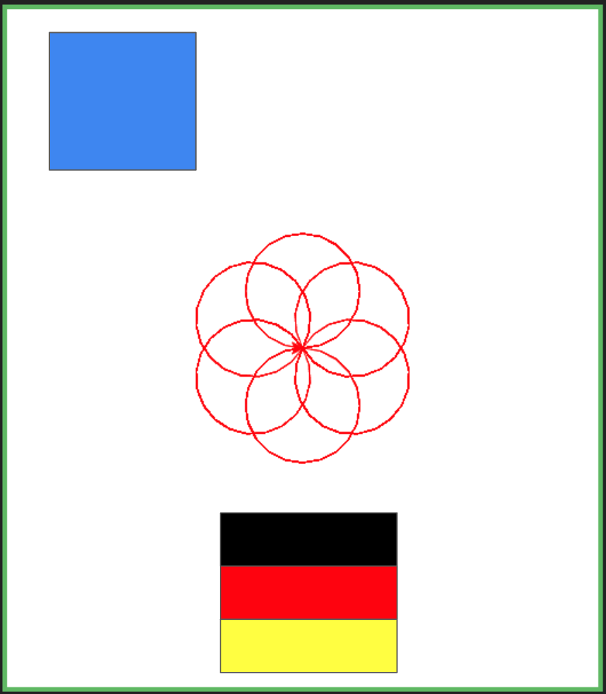

EXAMEN PAR
En la sanbox LINK se debe hacer el siguiente ejercicio:

Recuerde que cada parte del dibujo es un punto de esta manera:
-
El diseño central basado en círculos equivale a 6 puntos
-
el diseño de la bandera equivale a un punto
-
el coloreado completo de la bandera equivale a un punto
-
el cuadrado equivale a un punto
-
el coloreado del cuadrado equivale a un punto
recuerde que puede hacerlos en cualquier orden.